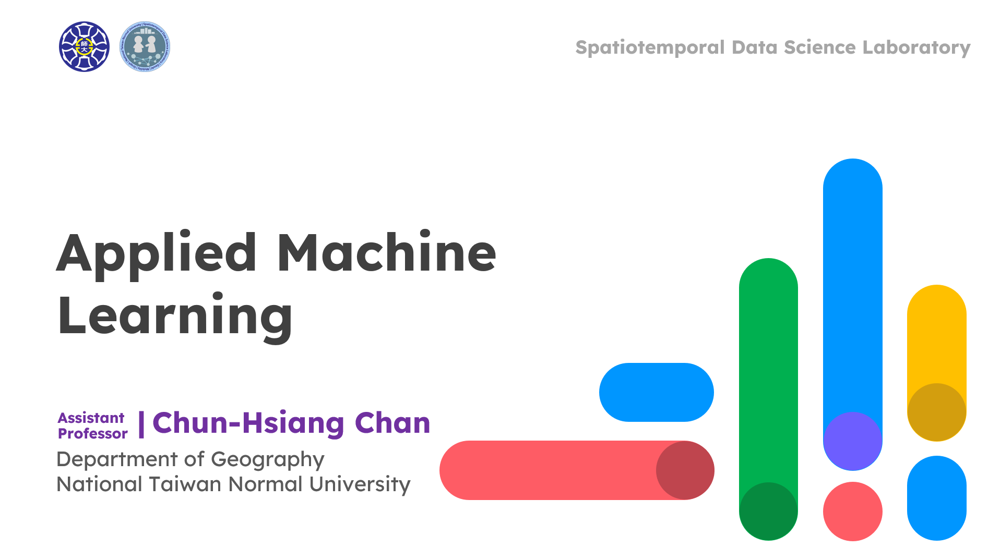

Applied Machine Learning @ NTNU
Course Content
This course provides a comprehensive overview of machine learning, covering fundamental concepts, model training techniques, and advanced methods for building robust predictive models. Throughout the semester, students will explore a variety of supervised and unsupervised learning techniques for GeoAI applications, including clustering methods, decision trees, ensemble learning, and deep neural networks. The course begins with an introduction to the foundations of machine learning, followed by essential model training and evaluation strategies. Students will learn about different clustering techniques such as K-means, hierarchical clustering, and density-based methods. The syllabus then progresses to advanced supervised learning techniques, including bagging, boosting, linear classification, and tree-based methods. In the later weeks, the focus shifts toward deep learning, starting with fundamental principles and progressing to multi-layer perceptron and convolutional neural networks for common GeoAI applications. The course includes hands-on assignments and projects, culminating in midterm and final reports that encourage students to apply their knowledge to real-world machine learning problems. By the end of the course, students will have a strong foundation in machine learning and deep learning, equipping them with the skills to develop and evaluate machine learning models effectively.
Course Intro.

00 :: Course IntroductionContents: (1) About CCH (2) Course intro. (3) Why you need to take this course? (4) What you will learn from this course? (5) Grading Policy (6) Question Time
TA Intro.
00 :: TA Intro.Contents: (1) Introduce Myself (2) What You May Learn from This Course (3) TAs Job (4) Common Questions (5) Q&A
Foundation of Machine Learning
01 :: Foundation of Machine LearningContents: (1) Why Machine Learning? (2) Learning from Data (3) Components in ML (4) Simple Model (5) Learning vs Design (6) Types of Learning (7) References
Building a ML Model
02 :: Building a ML ModelContent: (1) Training & Testing; (2) Overfitting; (3) Feature Engineering; (4) Lab Practice; (5) References
Potential Data Problems
03 :: Potential Data ProblemsContent: (1) Preprocessing Checklist; (2) Evaluation Metrics for Classification; (3) Data Imbalance; (4) Some Practical Issues
Classifer Models (I)
04 :: Classifer Models (I)Content: (1) Logistic Regression; (2) K-Nearest Neighbors; (3) Naïve Bayes; (4) Decision Tree
Classifer Models (II)
05 :: Classifer Models (II)Content: (1) Bagging Methods; (2) Random Forest; (3) ExtraTree; (4) Boosting Methods; (5) AdaBoost; (6) Gradient Boosting; (7) Support Vector Machine
Classifer Models (III)
06 :: Classifer Models (III)Content: (1) XGBoost; (2) CatBoost; (3) LightGBM; (4) Support Vector Machine
Explainable AI
07 :: Explainable AIContent: (1) Model Explanation; (2) Feature Importance; (3) Explainable AI; (4) SHapley Additive exPlanations; (5) Local Interpretable Model-agnostic Explanations; (6) Summary